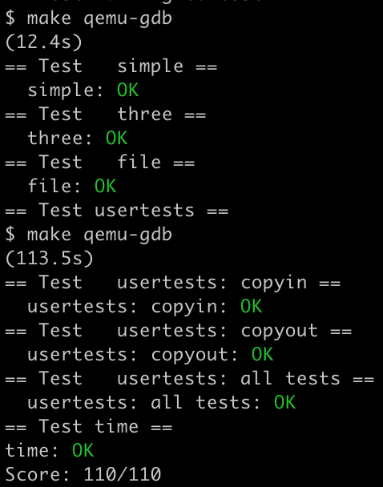

[xv6-mit-6.S081-2020]Lab6: cow
Lab: Copy-on-Write Fork for xv6
https://pdos.csail.mit.edu/6.S081/2020/labs/cow.html
代码：https://github.com/xyfJASON/xv6-mit-6.S081-2020/tree/cow
在 xv6 系统中，fork() 系统调用会复制父进程的所有用户空间内存给子进程（正如我们在 pgtbl 实验中看到过的那样）。可是，如果父进程很大，复制过程会消耗很长的时间。更糟糕的是，这可能是无用功，例如 fork() 后子进程紧接着 exec()，那么刚复制下来的内存根本不会用到。另一方面，如果父子进程都要用到这块内存，那么复制又是必须的。
解决方法是 copy-on-write (COW)。COW fork() 只给子进程创建一个页表，其 PTE 指向父进程的物理页，然后给父子进程的 PTE 全部打上不可写的标记。于是，当父子进程之一试图写这些页面时会产生 page fault，内核的 page fault 处理程序检测到这种情况后，给产生异常的那个进程分配一个新的页面，把原页面复制过去，修改 PTE 并打上可写的标记。处理程序返回之后，进程就能继续正常执行了。
COW fork() 让释放物理页面变得很 tricky，因为一个物理页面可能被多个进程的页表同时指向，因此只当最后一个指针撤去后才能释放。
Implement copy-on-write
任务：实现上述 copy-on-write 过程，要求通过 cowtest 和 usertests。
这次实验给的评级是 hard，但是个人感觉比以前的 hard 要简单一点，一方面我们已经有了前面实验的基础，另一方面这次要完成的功能非常明确，步骤和需要注意的点也在指导网站上明确地列了出来。
RISC-V 的 PTE 有 10 个标志位，其中第 8、9 位是为用户保留的，因此我用第 8 位作为 PTE_COW 标志，表示该 PTE 是否需要 copy-on-write：
1 | |
我们查看 fork() 的代码，发现页表复制是由 uvmcopy() 实现的，因此我们需要改的地方其实是 uvmcopy()。（我顺便查了一下还有没有其他函数调用了 uvmcopy()，结果惊奇地发现只有 fork() 调用了它）我们将开辟内存并复制内容的代码注释掉，改为直接向原空间建立映射，并把 PTE_W 置零，把 PTE_COW 置一：
1 | |
update_refcount(pa, 1) 的作用后文叙述。
现在，对于某个带有 PTE_COW 标记的 PTE 指向的页面，我们写它时会引起 page fault——因为它的 PTE_W 被置零了。和上一个实验（lazy allocation）一样，这个 page fault 在 usertrap() 中处理。当写页面发生异常时，scause 寄存器的值会被置为 15，stval 寄存器会存储导致异常的地址，所以我们根据这两个寄存器处理 copy-on-write：
1 | |
其中 handle_cow() 函数处理 copy-on-write：它先解析虚拟地址，如果发现其 PTE 的 PTE_COW 被置位了，则开辟新的空间，并将 PTE 指向这个新的空间，同时把 PTE_W 置一、PTE_COW 置零。这样，当我们返回用户空间时，用户进程就能正常执行了：
1 | |
为了方便，我传入了一个指针以保存新的物理地址，待会儿会用到。
copy-on-write 之后，原来的页面怎么办呢？在上面的代码中，我调用了 kfree 试图将其释放。但正如前文所述，只有当所有进程都不用一个页面时才能将其释放，所以我们需要开一个计数数组，对每一个页面统计有多少个进程指向了它。那一共有多少个页面呢？之前做第三个实验（page tables）的时候我们学习了，xv6（内核进程会用到）的内核空间是从 KERNBASE 到 PHYSTOP 的一段，所以一共有 (PHYSTOP-KERNBASE)/PGSIZE 页，并且物理地址 pa 在第 (pa-KERNBASE)/PGSIZE 页中，我们以此作为计数数组下标即可：
1 | |
每次 kalloc() 时，设置当前计数为 1；kfree 时，计数自减，如果减到了零，才释放内存：
1 | |
值得注意的是，kinit() 初始化是调用 kfree() 实现的，所以为了把计数数组初始化为零，可以在 freerange 中把所有页的计数置为 1，这样调用一次 kfree()，就能把计数置零、加入 kmem.freelist：
1 | |
为了让 kalloc.c 之外的函数方便地对 refcount 操作，我写了一个更新函数：
1 | |
上文 uvmcopy 就调用了它使得计数加一。
最后，我们还需要改 copyout，也用 handle_cow 函数即可，这里我设置的第三个参数就发挥了作用，当然不设置这个参数，之后 walkaddr 一下也行。
1 | |
make grade 截图：
